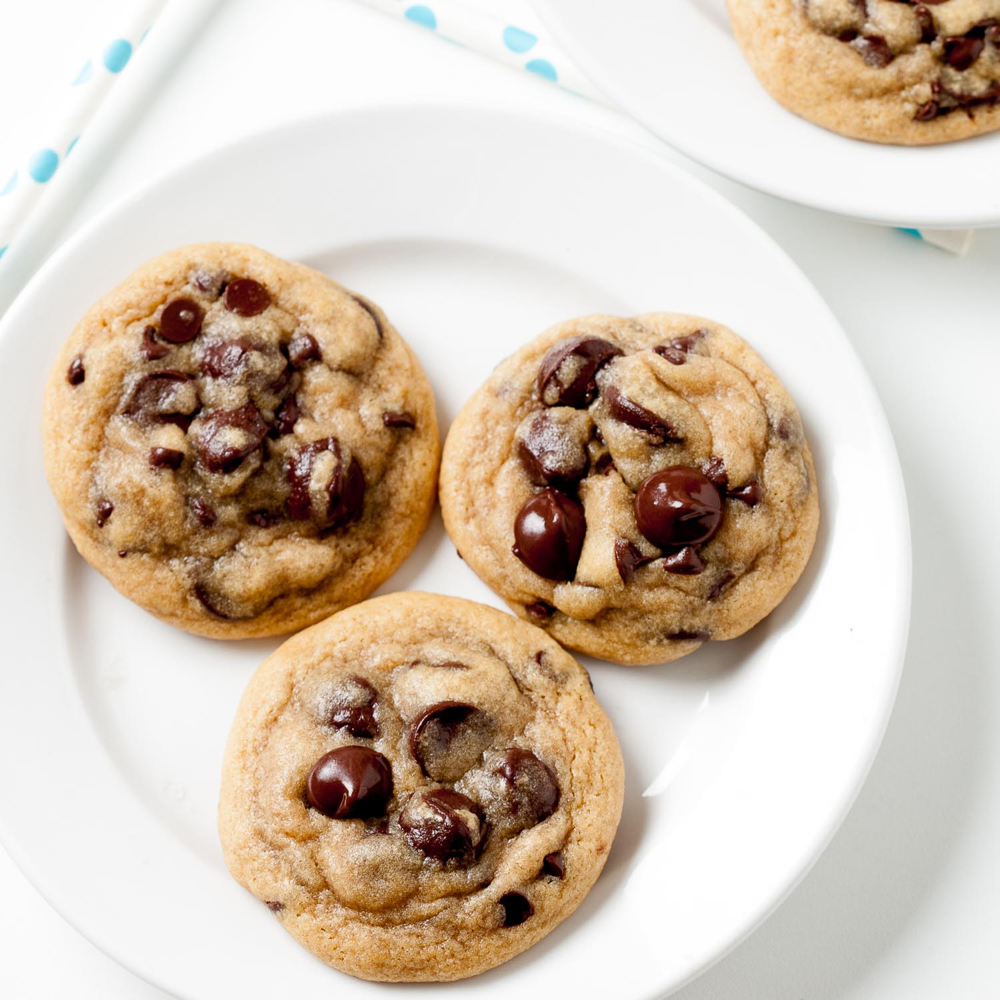

Fluffy Buttermilk Pancakes Recipe
Introduction:
Satisfy your sweet cravings with these irresistibly chewy chocolate chip cookies. Loaded with gooey chocolate chips and boasting a perfect balance of sweetness, these cookies are a delightful treat for any occasion. Follow our simple steps to create a batch of homemade cookies that will fill your kitchen with the enticing aroma of freshly baked goodness.
Ingredients:
- 1 cup (2 sticks) unsalted butter, softened
- 1 cup granulated sugar
- 1 cup packed light brown sugar
- 2 large eggs
- 1 teaspoon vanilla extract
- 3 cups all-purpose flour
- 1 teaspoon baking soda
- 1/2 teaspoon baking powder
- 1/2 teaspoon salt
- 2 cups semisweet chocolate chips
Optional Additions:
- 1 cup chopped nuts (walnuts or pecans)
Instructions:
- Preheat the Oven:
- Preheat your oven to 350°F (175°C). Line baking sheets with parchment paper or silicone baking mats.
- Cream the Butter and Sugars:
- In a large mixing bowl, cream together the softened butter, granulated sugar, and brown sugar until light and fluffy.
- Add Eggs and Vanilla:
- Beat in the eggs one at a time, ensuring each is fully incorporated. Add the vanilla extract and mix until smooth.
- Combine Dry Ingredients:
- In a separate bowl, whisk together the flour, baking soda, baking powder, and salt.
- Mix Wet and Dry Ingredients:
- Gradually add the dry ingredients to the wet ingredients, mixing just until combined. Avoid overmixing to maintain a chewy texture.
- Add Chocolate Chips (and Nuts, if using):
- Gently fold in the chocolate chips until evenly distributed. If you're adding nuts, fold them in at this stage.
- Scoop Dough onto Baking Sheets:
- Drop rounded tablespoons of cookie dough onto the prepared baking sheets, spacing them about 2 inches apart.
- Bake the Cookies:
- Bake in the preheated oven for 10-12 minutes, or until the edges are lightly golden. The centers should still be soft.
- Cool on Baking Sheets:
- Allow the cookies to cool on the baking sheets for 5 minutes before transferring them to wire racks to cool completely.
- Enjoy:
- Once cooled, indulge in the chewy goodness of these chocolate chip cookies. Pair them with a glass of milk or your favorite hot beverage.
These chewy chocolate chip cookies are perfect for sharing with loved ones or enjoying as a sweet pick-me-up. Bake a batch today and experience the joy of homemade cookies at their best!
Return to Main Page